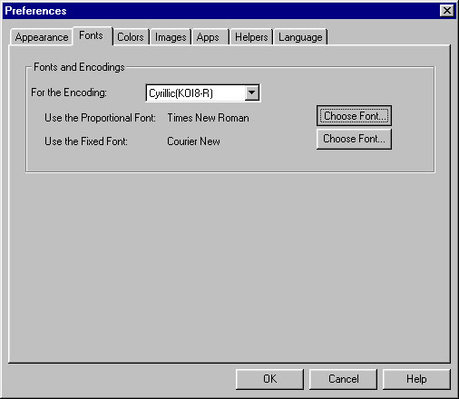
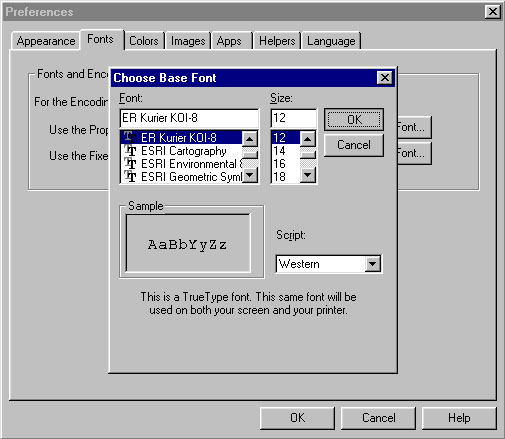
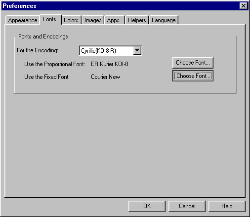
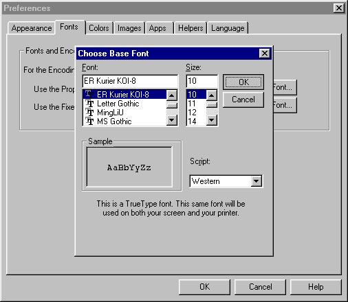
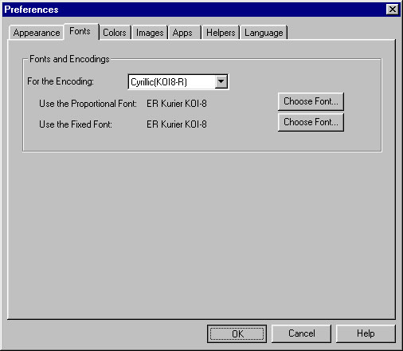

Page index / PC-MacRussian
Configuration Step Two
Configuration of Netscape Navigator 3
Step Two
Then click on the Choose Font button to the right of the 'Use the Proportional Font'.

Select the Font "ER Kurier KOI-8" and then click 'OK'.

In the same way, click on the Choose Font button to the right of the 'Use the Fixed Font'.

Select the Font "ER Kurier KOI-8" and then click 'OK'.

You will have to repeat the same steps for encoding "Cyrillic." For the encoding select "Cyrillic", and choose "ER Kurier 1251" as the default.
Finally, click 'OK' to finish the configuration.

Previous Step || Next Step